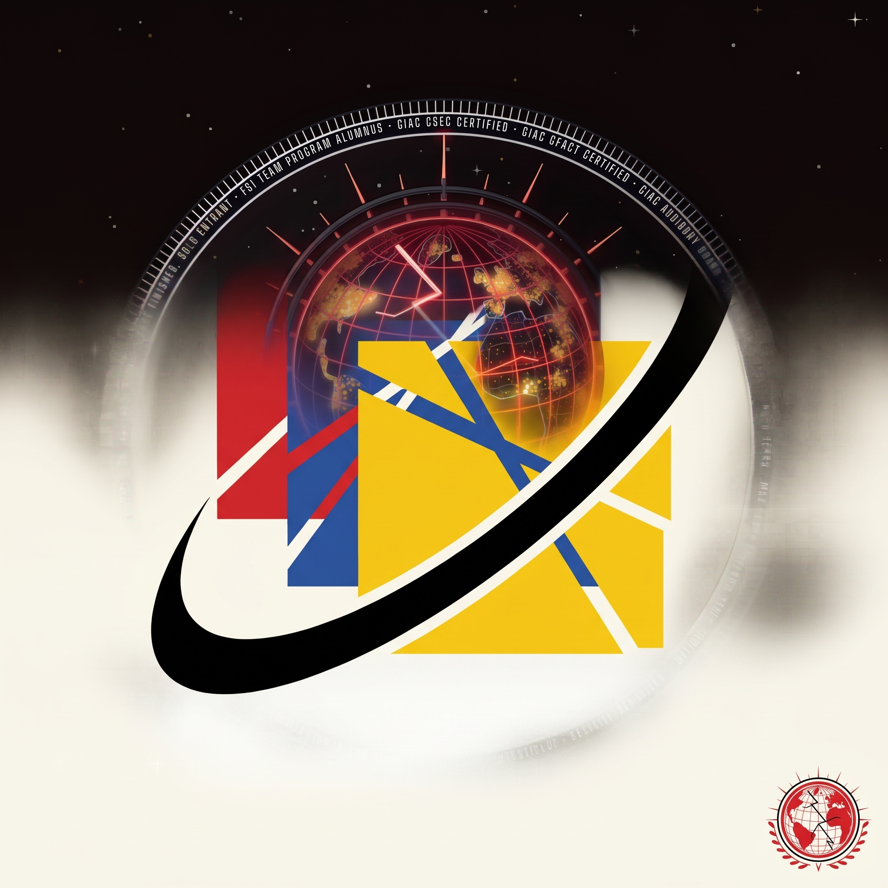
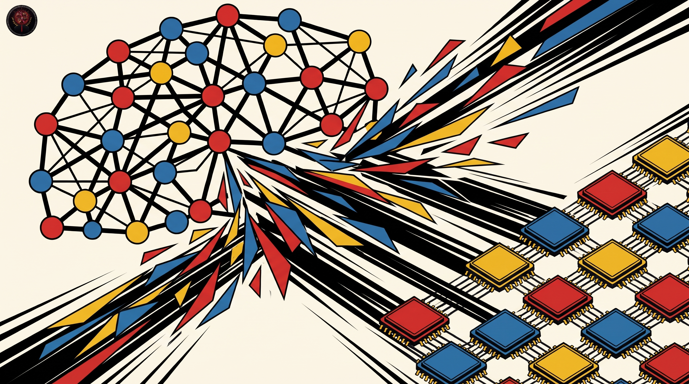
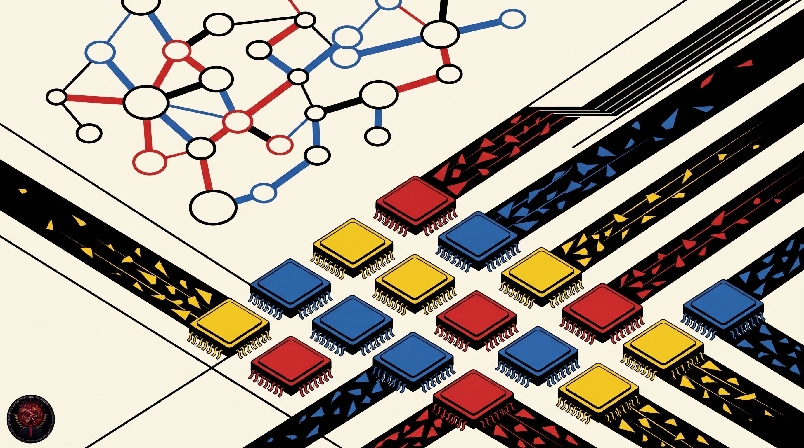

Microsoft / Deep learning optimization library
DeepSpeed is an easy to use deep learning optimization software suite for training and inference at scale. Its ZeRO optimizer shards model state across many GPUs, so dense or sparse models with billions or trillions of parameters can train and serve on hardware that could not hold them whole.
I keep this fork in my fleet as the reference copy of that work, and I built this page from the repository itself: the pillars, the install route, and the adoption list below are the repo's own.


| Question | Answer |
|---|---|
| What it is | A deep learning optimization library for distributed training and inference |
| The key win | Train and inference dense or sparse models with billions or trillions of parameters, and scale to thousands of GPUs |
| Who it is for | Researchers and practitioners training and serving large deep learning models |
| Licence | Apache License 2.0, verified against the LICENSE file in this repo |
The training pillar gathers ZeRO, 3D parallelism, DeepSpeed-MoE, and ZeRO-Infinity. ZeRO shards optimizer state, gradients, and parameters across the GPUs in a run, which is the move that lets one model live on many machines at once.
The inference pillar combines tensor, pipeline, expert, and ZeRO parallelism with custom inference kernels, communication optimizations, and heterogeneous memory, aiming at low latency and high throughput for serving large models.
The compression pillar offers techniques researchers and practitioners can compose to shrink a model while it runs faster and costs less to serve. The README names ZeroQuant and XTC among the compression work included here.
The fourth pillar is an initiative from the DeepSpeed team at Microsoft: building system technology aimed at large scale scientific discovery, with its own tutorials and a white paper linked from the repo.

PyTorch must be installed before DeepSpeed. The README recommends a PyTorch version of 1.9 or newer, ideally the latest stable release, plus a CUDA or ROCm compiler such as nvcc or hipcc for the C++ and CUDA extensions, which DeepSpeed calls its ops and builds just in time by default.
pip install deepspeed ds_report
The second command, ds_report, prints the DeepSpeed environment report: it validates the install and shows which extensions and ops your machine is compatible with. Hardware the project develops and tests against includes NVIDIA Pascal, Volta, Ampere, and Hopper GPUs, and AMD MI100 and MI200.
The README keeps a list of large models trained with DeepSpeed. Four entries from that list, with the parameter counts the repo itself gives:
The same README notes integrations with Transformers, Accelerate, Lightning, MosaicML Composer, Determined, and MMEngine, each with its own documentation page.